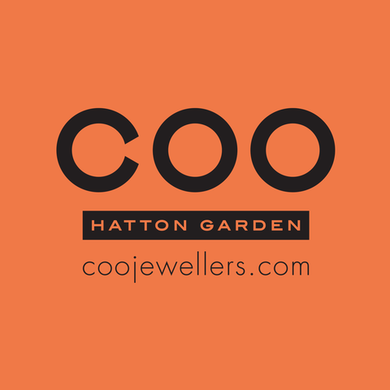

I have tried to colour balance every photo against its background, so the colours are as close to the real stones as we can get them. Toggle white and grey backgrounds.
Tap a single stone to watch it turn.